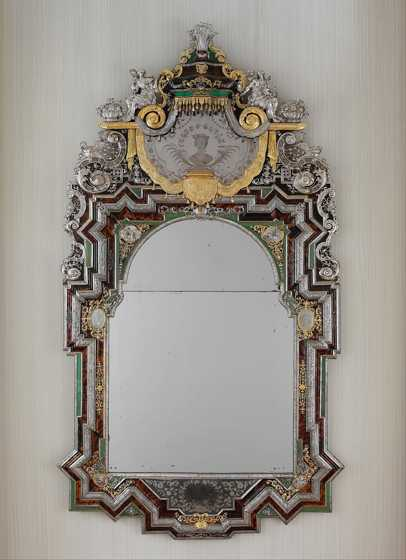
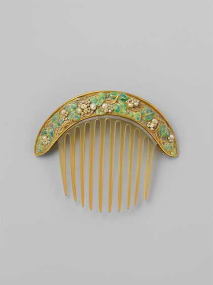
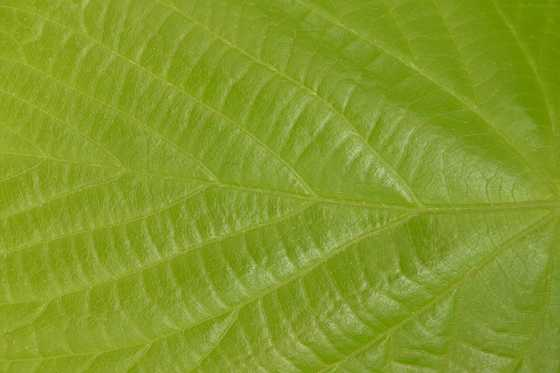
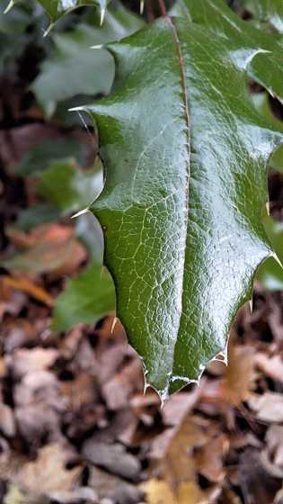
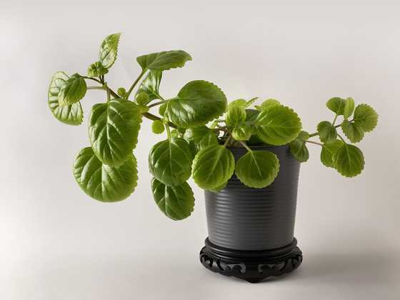
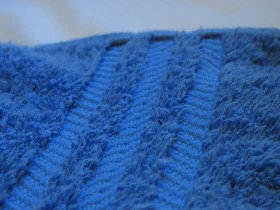
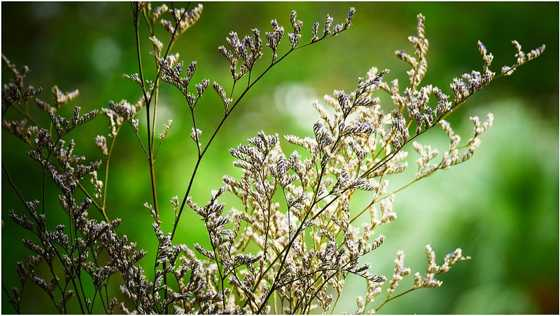

群馬県富岡市七日市の美容室
ふと幸せを感じて、
自分をスキになれる、
母と娘の癒しじかん。
美容室愛華夢は、母と娘のふたりで営むサロンです。髪を整えながら、ほっと一息つける時間をお届けします。


お店の想い
「自分をスキになれる」時間を、ふたりで。
Instagramのプロフィールには、「ふと幸せを感じ、自分をスキになれる癒しじかん」という言葉と、「母(62歳)×娘(33歳)でサロンやってます」という紹介があります。お母さまと娘さんが一緒に営む、あたたかなサロンです。
プロフィールでは、朝早い時間のヘアセットや着付け、キッズカット、まつ毛パーマ、七五三・成人式のお支度、シェービングなどが案内されています。ご連絡は公式LINEからも気軽にできるとのことです。
情報源: Instagram @aikamusalon(プロフィール)
店名「愛華夢」の意味や創業の経緯は確認できていないため、載せていません。見出しの言い回しは制作側の表現です。

口コミ
こんな声が届くサロンを目指して。
イメージ例
朝早くからのお支度でも、落ち着いて任せられました。母娘でやっているお店ならではの安心感があります。
イメージ例
子どもの髪を切ってもらいました。待っている間もあたたかく声をかけてもらえて、親子でほっとしました。
イメージ例
仕上がったあと、鏡の中の自分が少し好きになれた気がします。また来たいと思える時間でした。
上記は制作側が創作したイメージ例で、実在のお客様の声ではありません。
アクセス・ご案内
富岡市七日市のサロンへ。
| 所在地 | 群馬県富岡市七日市62-6 |
|---|---|
| 電話 | 準備中 |
| 営業時間 | 準備中 |
| 定休日 | 準備中 |
| ご予約 | お問い合わせはInstagramまたは公式LINEから |
| SNS | Instagram @aikamusalon |




